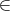
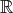

Totally Unimodular Matrices
John Mitchell
See Nemhauser and Wolsey, section III.1.2, for more information.
Definition 1 An m×n matrix A is totally unimodular (TU) if the determinant of each square submatrix is equal to 0, 1, or -1.
Necessary conditions:
Theorem 1 If A is totally unimodular then all the vertices of {x  +n : Ax = b} are integer for any integer vector b m.
Theorem 2 If A is totally unimodular then all the vertices of {x +n : Ax ≤ b} are integer for any integer vector b m.
It follows that if A is totally unimodular then the optimal solution to the integer program
can be found by solving its LP relaxation.
Theorem 3 The following statements are equivalent:
Note: unit rows and columns are rows and columns of the identity matrix.
Sufficient conditions:
Theorem 4 An integer matrix A with every entry aij = 0 or ±1 is totally unimodular if no more than two nonzero entries appear in any column, and if the rows of A can be partitioned into two sets I1 and I2 such that:
Corollary 1 Any linear program of the form
where A is either
has only integer optimal vertices.
Thus, the following problems can be solved by solving linear programs, and the optimal solutions to the LPs are integral:
shortest path, max-flow, assignment, weighted bipartite matching, …
Theorem 5 If all the extreme points of {x +n : Ax ≤ b} are integral for all b ℤm then A is totally unimodular.
Necessary and sufficient condition:
Theorem 6 The following statements are equivalent:
Note that Theorem 4 is a special case of this theorem (after transposing the matrix).